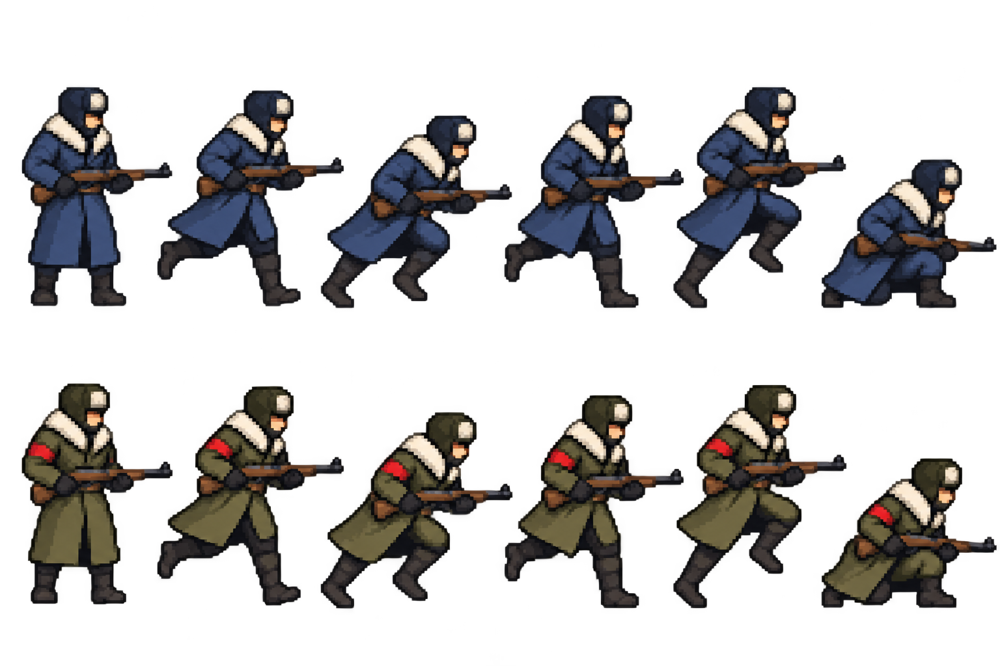
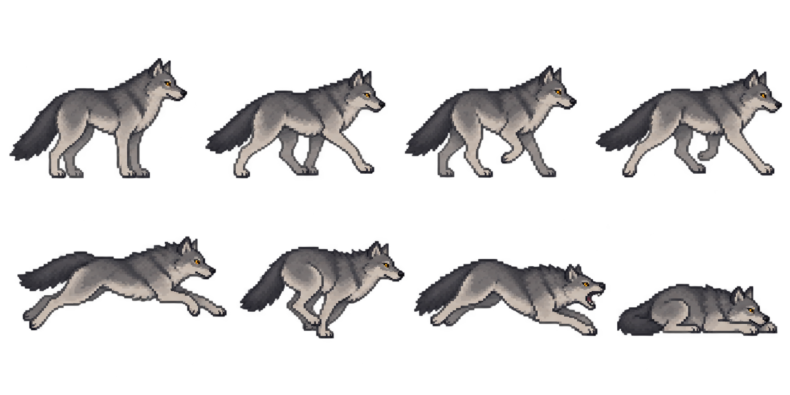
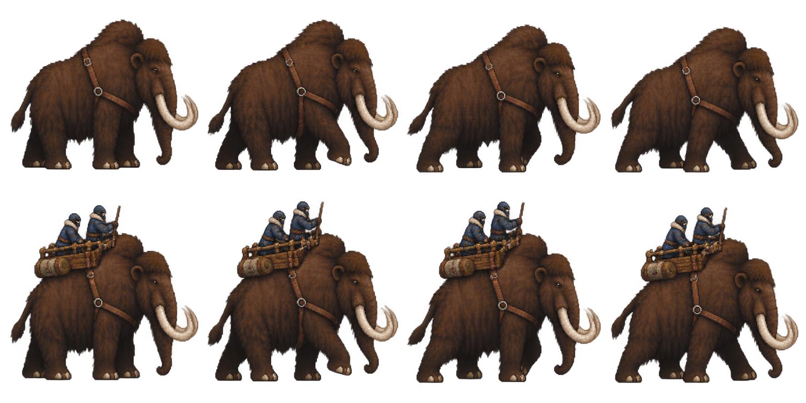
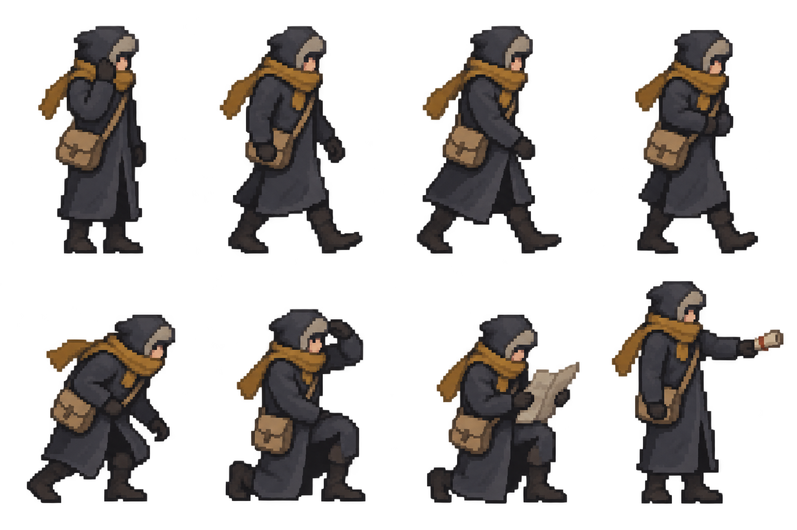

TRANSARTICA · 2 OCTOBER 2026
Actor designs for Opus
Four original pose sheets for the next animation pass. Keep the frozen railway world, clear silhouettes and distinct movement: planted troopers, bounding wolves, heavy mammoths and quiet spies.
Read the animation handoff · Generation prompts · Asset details
Design references, pending artistic review. Opus still needs to align frames, finish directions and action transitions, clean alpha masks and review native playback. These sheets are not integrated animations.
Troopers
Navy player, olive enemy. Stable head and weapon, opposing leg contacts, coat trailing behind movement. Complete climb, melee and demolition branches from the existing key-pose references.

Combat unit · current maximum 12×17 logical pixels. The source model has movement, boarding, melee and demolition, with no independent infantry rifle-fire damage event.
Wolves
Long low silhouette, clear paws, compressed and stretched spine. Use the pounce as encounter staging; finish the contact sequence before treating it as a loop.

Campaign encounter · separate the animal from its static plate before adding movement.
Mammoths
The same animal bare and with wooden howdah. Heavy foot placement, body transfer, delayed trunk and tail; keep riders attached to the mount rather than bobbing independently.

Combat and herd encounter references · current combat maximum 28×28 logical pixels. Finalize coherent animal proportions, leg order and separate rider attachments.
Spies
A civilian reconnaissance silhouette: charcoal coat, ochre scarf and document satchel. Quiet walking, observing and reporting. Costume is a proposal for owner review.

Records and menus currently · future sprite integration needs to preserve source visibility and reconnaissance rules.